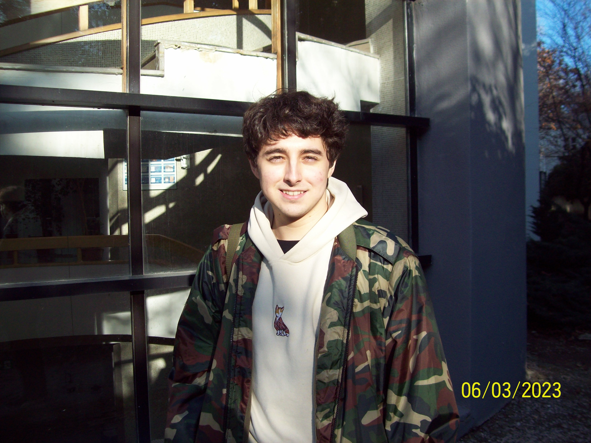

Furkan Efe Semerci

Contact Info
Education
- Bilkent University, Information Systems and Technologies
CGPA: 3.62 / 4.00
- Tevfik Fikret Highschool, French bachalaureat equivalent
- College Moliere, Paris, France
Certifications&Licences
- Delf-B2
- MCMUN'18 - METU College MUN
Skills
- Programming: C, HTML, CSS, Python
- Tools: Microsoft Word, Excel, Access